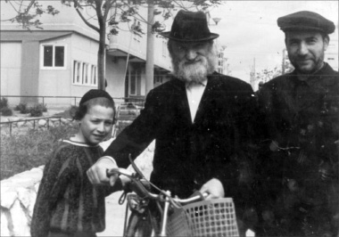

A Chassid and a Man of Chessed
Stories and memories about the Chassid, R’ Hirschel Lerner, recounted by his granddaughter and suffused with Chassidic flavor. * Part 5.
HELP TO ESCAPE

With Hashem’s help he did well, and within a few years he became the manager at the business where he worked and was rich once again.
In a small factory one could easily manage, relatively speaking, without having to work on Shabbos. You were able to bribe some people so the government wouldn’t know.
My grandfather was accepted by all, Jews and non-Jews. He was very accepted by the Bucharian community. All respected him. He generously paid his workers and they loved him. On the one hand he was a well to do businessman with a good business sense; on the other hand, he conducted himself very simply.
“WHOEVER IS HUNGRY; WHOEVER IS IN NEED”
All those who were down on their luck would end up going to my grandfather. There was a woman in Samarkand who was all alone. Whenever she rented a house, the landlord would evict her because of the unpleasant odors. The only one who would help her each time was my grandfather. He had no sense of smell and this made it easier for him to help her and remove her belongings before they were thrown out.
The same was true with another woman who had a derogatory nickname because she suffered from illness. She brought home every bottle she found on the street and within a few months you couldn’t enter her house. When they would evict her, he would help her move.
There was a rebbetzin in Samarkand from Bessarabia. She was also a tragic figure. Her son-in-law was a religious man. My grandfather supported both of them. They moved to Tashkent and my grandfather, who regularly flew to Tashkent on business, would visit them.
On one of these trips, his son Moshe joined him. He relates:
“When we landed in Tashkent and got into a cab, the first thing he did was travel to the market and load up with fruits and vegetables. Then we traveled to the rebbetzin where we unloaded all the produce and told her that in Samarkand the fruits and vegetables were much cheaper. When she wanted to pay, he explained that it was very cheap in Samarkand and he took a tenth of what it cost.”
That was my grandfather.
HACHNASAS KALLA
He did a lot on behalf of brides. He made sure that every Jewish man and woman who wanted to marry would do so according to Halacha. In many cases, he paid for the wedding. In exchange, he requested that they have a proper Kiddushin and Sheva Brachos at the end of the wedding. To make this happen, some Lubavitchers would come and complete the minyan. The guests who were invited to the wedding were not always pleased by the attendance of Anash.
The shidduch of Y. and P. was dependent on financial arrangements. In order to resolve the problems between the two sides, my grandfather paid for the wedding and arranged for an apartment and furniture. At the wedding itself, he made sure it was all in accordance with Halacha. He gathered together religious men so that they would see to the chuppa and Sheva Brachos.
The religious presence was not to the liking of some of the guests, who felt constrained by their presence. They offered these unwanted guests some rubles to be rid of them. But the mechutanim knew that without these chevra they would not be able to afford the wedding. They tried to calm down those who were upset.
My grandfather saw what was taking place and said, “Don’t worry. Let us do the Sheva Brachos and then you can continue celebrating without us.” Everybody joined in the Sheva Brachos and then they all sang and danced; by then the opposition no longer had any interest in getting rid of them.
Some of those people did t’shuva, and today their children serve as mashpiim in various communities around the world.
ESCORTING THE DEAD
Giving honor to the dead was important to my grandfather. One time, a Jew was buried in a place where Jews are not to be buried. When he found out about it, he made the effort to find the place, exhume the dead man, and bring him to Jewish burial, even though this entailed personally endangering himself.
At funerals he made sure that the sons said Kaddish (and paid the gravediggers). One time, the mourners said to one another, “What is he doing here? How do we get rid of him? Maybe it’s worth paying him three rubles so he leaves!” One of them gave my grandfather three rubles, but my grandfather continued to direct the funeral, paying three thousand rubles which was the cost of the funeral and burial.
HUSBANDS AND WIVES
Since people greatly admired him, he became a marital advisor and helped many people with shalom bayis. In one case, a couple wanted to divorce because of pressure from their parents. When my grandfather found out about this, he took the couple for a walk and explained to them what would happen if the parents achieved their goal. This family lives happily till this very day with children and grandchildren who are frum, some of whom are mainstays of Chabad communities around the world.
Another time, there was a couple that planned to divorce because of financial problems. The husband, who was a lawyer, eventually became a beggar. He left his home and began wandering from place to place. He collected jars of jam and asked my grandfather to keep them for him. Of course, my grandfather agreed. A year later, the man came back and asked for his jars and also asked to be paid, since in the meantime my grandfather could have benefited from the jars by using them to hold valuables. My grandfather paid him the money he demanded, though not before making sure the man would return home.
Another time, R’ Moshe Nisselevitch went to my grandfather and told him about a family that needed help buying a home in Samarkand. My grandfather took out money and lent it to them.
Another time, a Jew was caught for a financial crime and was sentenced to prison. My grandfather paid a fortune so they wouldn’t put him back in jail, since this wasn’t the first time he had been caught.
BASKING IN THE PRESENCE OF TORAH SCHOLARS
There were two things that were the impetus for my grandfather’s deeds: his unusually good heart and his subservience to Torah scholars. He always found talmidei chachomim and supported them.
There was a man by the name of Yisroel Nachman Seidman who came from Kishinev. He was a genius and had been the rav of Tiraspol (the next largest city in Moldova after Kishinev). When he was only 22 he conducted a correspondence of Halachic questions and responses with the great men of his time.
He was imprisoned in 1937. When he returned home, his family told him that they could not make peace with the fact that Heaven punished a righteous Jew like him and that he had to suffer for ten years in jail. By way of protest, they had decided to cast off the yoke of Torah and mitzvos.
In addition to the suffering he previously endured, now he had to deal with this tremendous aggravation. He had no choice but to divorce his wife. He then married Chaya, the daughter of the rav of Nikolayev. They were happy and lived in peace but arrived in Samarkand during the war, bereft of everything.
In 5709, he began to work in a textile factory. To make a living, he had to exert tremendous physical effort. In his free time, mainly at night, he would sit and learn (he was always involved in difficult sugiyos). His wife was very concerned about him since he had no rest, not by day and not by night.
After some time, my grandfather found out that R’ Seidman had the know-how to be a bookbinder, and he immediately found him a job in this line which made his life easier.
On Shabbos, the Chassid Avrohom Yosef Antin and my grandfather would visit R’ Yisroel Nachman Seidman and his wife. At that time, they lived in an attic that was called a balchana in the old city of Samarkand. The rebbetzin would prepare a portion for each of them for the third Shabbos meal and also for the children.
“It was very pleasant being there,” remembered my grandfather, “and to see how these Jews, who were preoccupied all week with making a living, were completely disconnected from the material world and were busy clarifying questions and in recounting stories about ‘gutte Yidden.’ Every ray of light that came through their little window felt like a ray of light of Shabbos. Even the appearance of the tall trees that I could see through their window always remains with me; it stays in my memory forever, especially when combined with the talk of these elevated people…”
My grandfather recognized R’ Yisroel Nachman’s greatness and clung to him and helped him to the point that when my grandfather bought a big house, he built a special wing for him. He was also the teacher of his children.
To be continued, G-d willing
Beis Moshiach (staff). "A Chassid and a Man of Chessed." Beis Moshiach, no. 910 (January 7, 2014).